For my Interaction Design class, I worked in a small group, applying User
Centered Design principles, to develop an application (called KitchenMate)
for the 10-inch Echo Show. Our goal, provided via the brief, was to encourage
users to improve their "diets and [be] more mindful of the environmental
impact of their food." The first steps we took were to do some background research
on the topic, meet to discuss that research, and then to plan out a timeline.
As we were working remotely, most of the screenshots included are from our Miro Board.
To create a truly user centered product, we each conducted interviews with
potential users that would inform our future design decisions. In order
to allow the interviews to flow naturally, but to guarantee we hit the range
of points relevant to our brief, we decided on conducting semi-structured
interviews. Before said interviews, we met as a group to confirm the more
specific topics we felt would be important to cover and to write and refine
a handful of questions. After all of the interviews (and naturalistic observations
in grocery stores) were finished, we wrote down the key points from each
user we had spoken to.
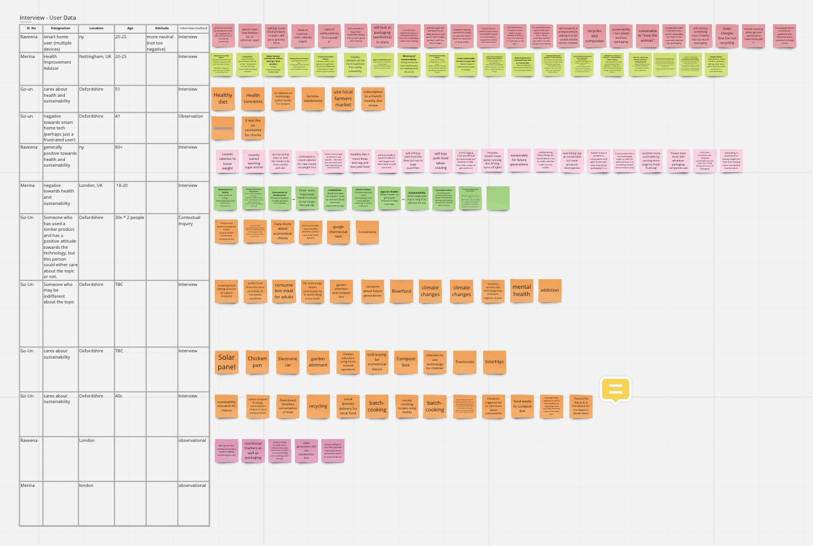
By looking for common trends and overlapping ideas in our data, we were
able to translate and scale down our information to a more cohesive List
of Key Insights. Some of our user insights included looking at nutrition
labels in relation to diet, struggling with plastic packaging when making
purchases from grocery stores, and wanting to have a more tangible, positive
result in order to stay motivated when forming new habits. The Key Insights
were incredibly useful in helping us create Personas, for both primary and
secondary target users, and Future User Journeys for each of those Personas.
These User Journeys and Personas were not only important down the line when
it came to developing features, but allowed us, as a team, to empathize with
the varying needs and challenges we thought our users could face.
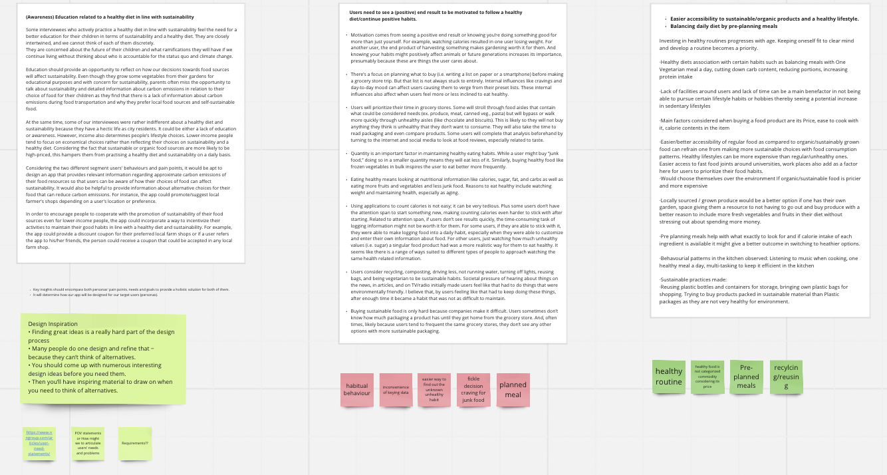
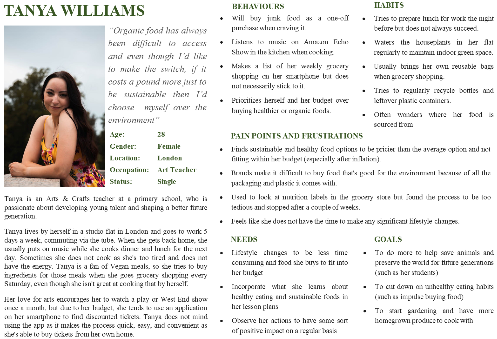
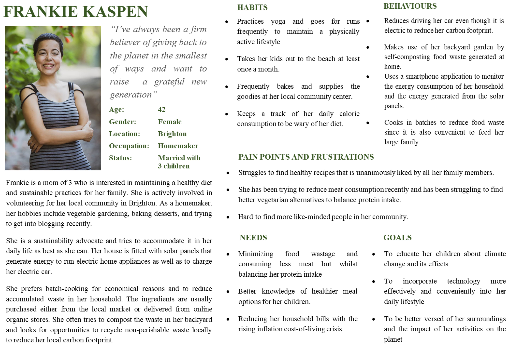
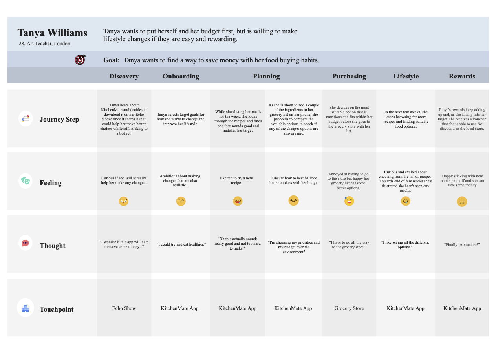
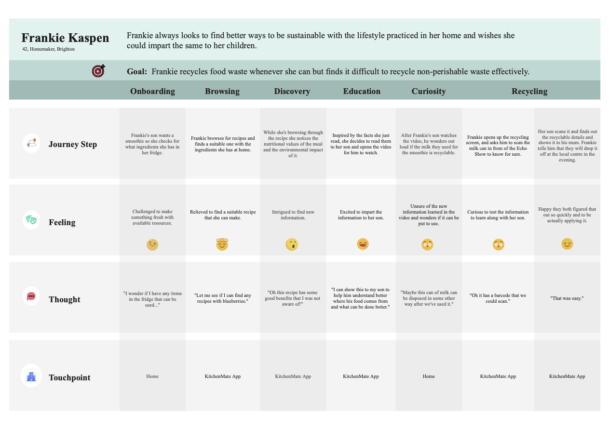
Creating Point of View Statements and, from those, How Might We Questions
really helped us move forward from brainstorming to refining our ideas into
actual features. We worked together to figure out both what would be core
to include based on what our users had said as well as what was realistic
and important to implement based on the brief we had received. For example,
multiple users mentioned wanting to buy healthier and more sustainable products,
but struggled with the associated cost of said products and the time it
took to compare items in a grocery store. This turned into us thinking about
developing a tool within our app so users could, at a glance, compare different
items and make an informed "cost/benefit" decision. To help with figuring
out the implementation of all of our potential features, we tied Functional,
Non-Functional, and Data Requirements back to our POV Statements. And, throughout
the entire process, we made sure to empathize with our users' wants and
needs and to refer back to our initial user research.
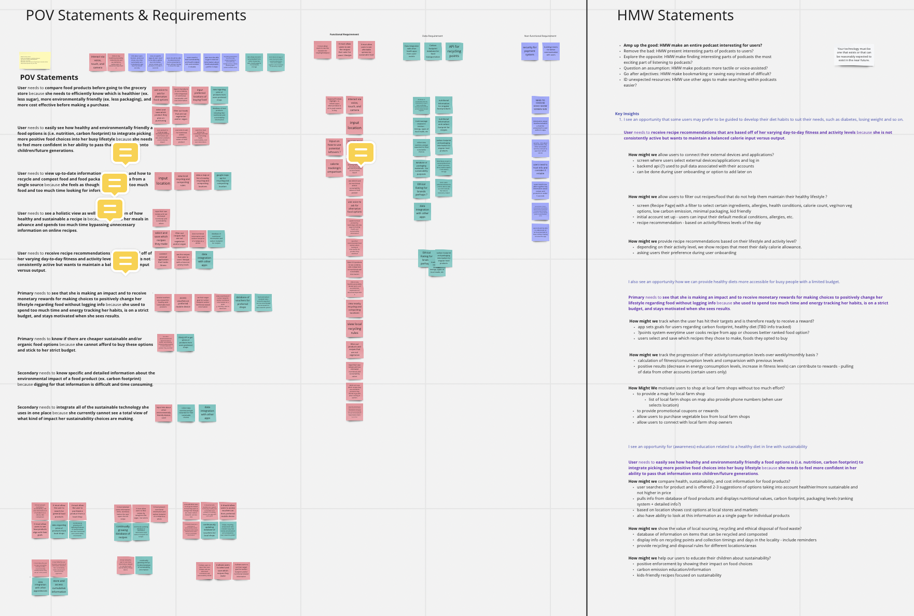
With a list of features we were looking to implement, we divided said features
into overarching, key categories; each team member then took the lead on
a couple of areas (I focused on the features related to presenting recipes
and developing a rewards system to motivate users). We used low-fidelity
sketching not only as a way of brainstorming designs, but to efficiently
and effectively communicate ideas between team members. (Only my sketches
are included below.)
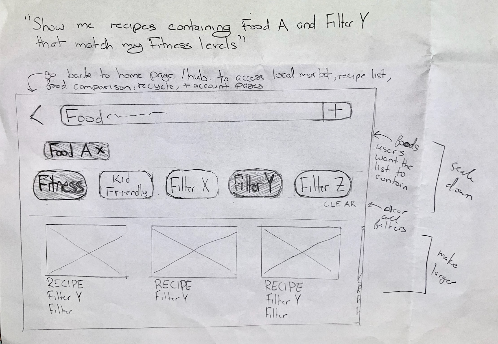
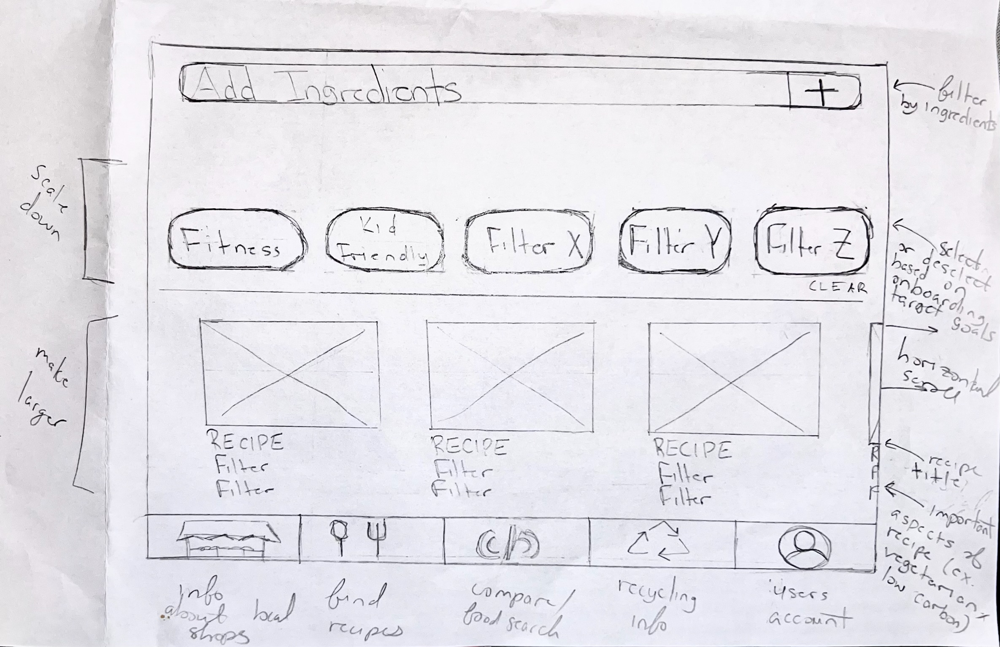
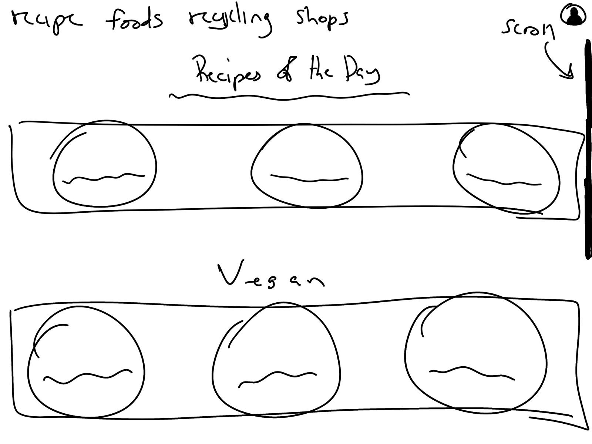
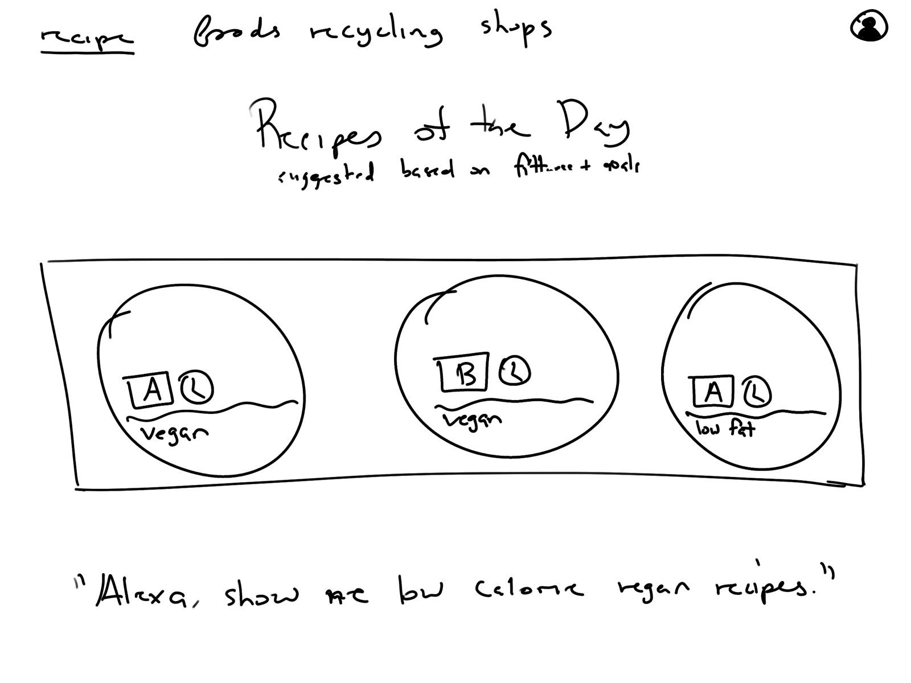
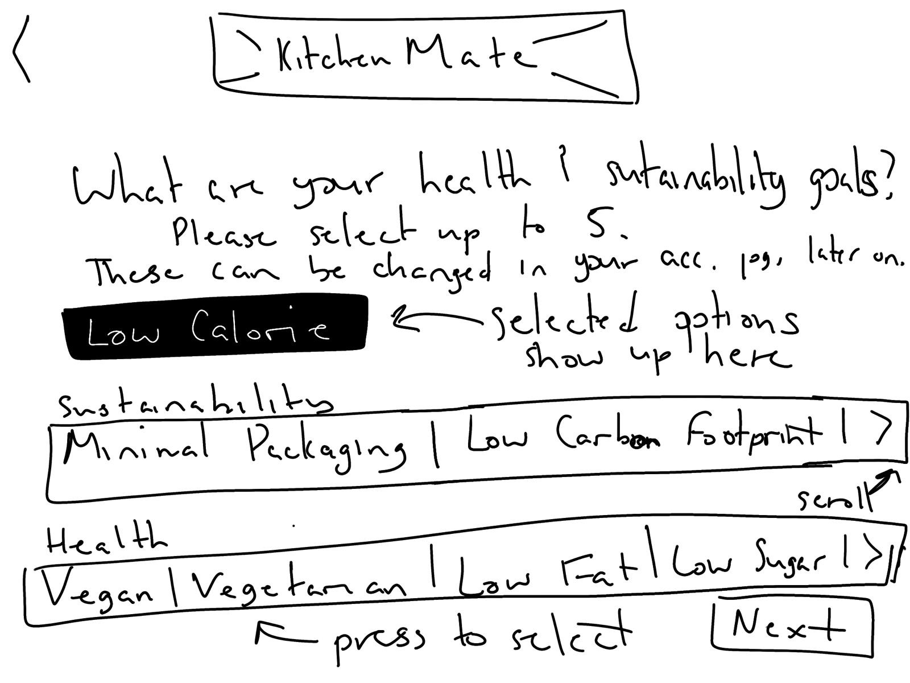
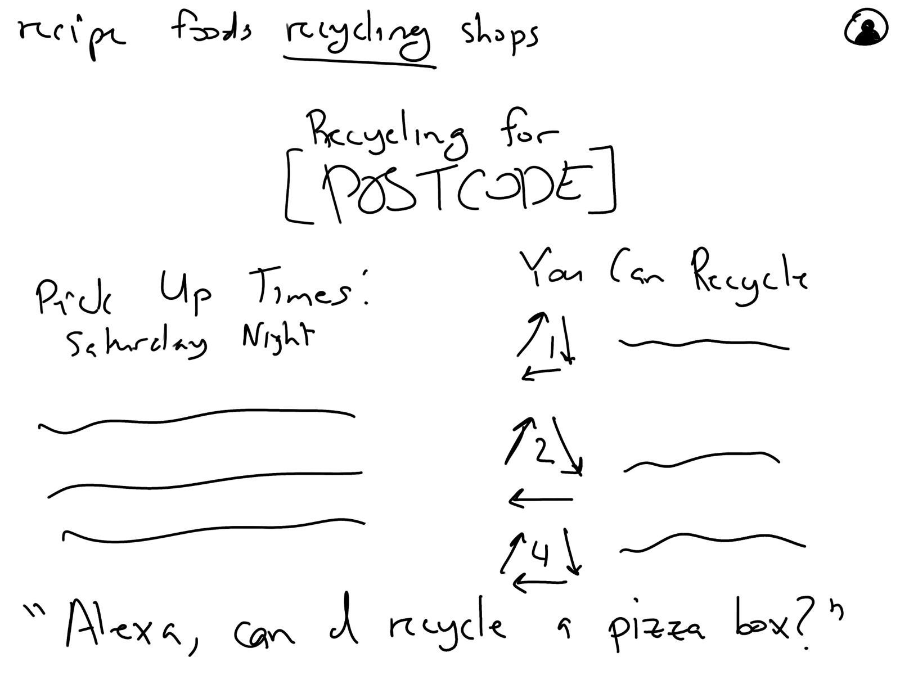
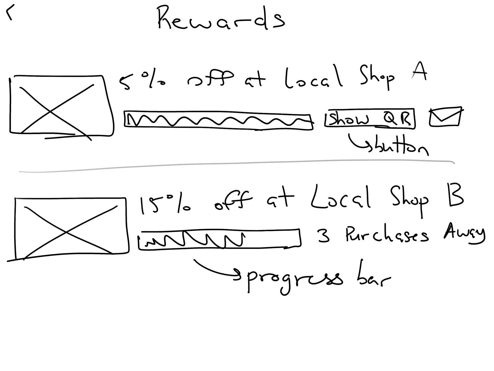
Next we created mid-fidelity, annotated wireframes and eventually made those
into a clickable prototype. We divided the work and prioritized designing
the key features first before developing any additional screens. I also
created a grid system and template page (for assets like buttons, text,
etc.) for the sake of consistency. Considering Smart Home devices are typically
more minimalist, we decided it was worth the extra effort to create a mid-fidelity
prototype (over a paper prototype) for testing. Because we only had time
to do one round of testing, this allowed us to evaluate the product on a
touch screen device and resulted in more detailed and nuanced feedback.
As none of the team had experience with Axure, we decided to use this software
and took it as an opportunity to learn something new "on the job." When
designing, referring to our User Journeys as well as considering other edge
cases was crucial; this helped us understand how our application could be
used so we could create something that would be accessible via both voice
and touch while still aligning with those more typical, minimalist Smart
Home interfaces. When making the clickable prototype, we referred back to
our List of Key Insights so we knew what features to make clickable in order
to allow the user to be able to move through the core elements of our application.
These core features formed a story where the user would look for a recipe
(filtered by their personal health and sustainability goals), compare the
sustainablity and nutritional information of items that the recipe required,
and, later on, scan empty food waste (like jars) to learn if and when they
could be recycled.
To work with the resources our group had available, we used both in-person
and remote moderated testing with target users (with a classic think-aloud
protocol for both). We developed a set of tasks framed by a Scenario that
was inspired by our Future User Journeys to help the user understand why
they might be moving through the motions of each task considering we were
not in a kitchen environment. For each participant, we wrote out the results
on Miro sticky notes; we made sure to differentiate between positive and
negative feedback so we knew both what elemets would need to change and what
should stay the same. We drew connections between the responses and considered
frequency, effect on the product, as well as success rate when prioritizing
our results.
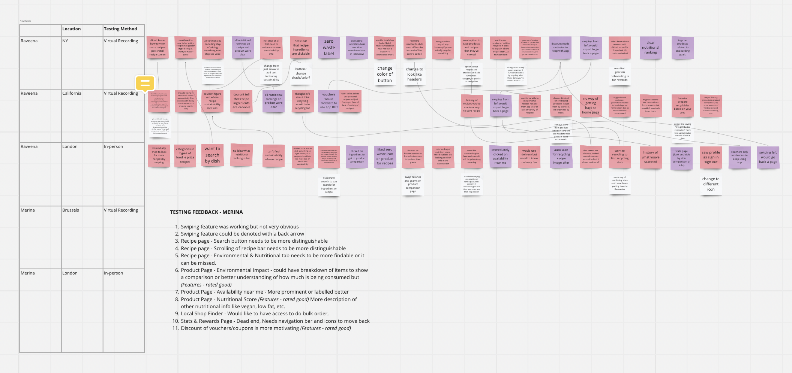